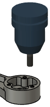
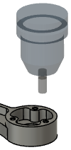

<div id="simulation_show_tool_transparent"><p>工具を半透明にすることができます。工具を通過してパーツと切削を確認する場合に便利です。</p>

<table class="tipTable" cellspacing="10">
<tr>
<td><center></center></td>
<td><center></center></td>
</tr><tr>
<td><center><p><b>無効</b></p></center></td>
<td><center><p><b>有効</b></p></center></td>
</tr></table>
</div>